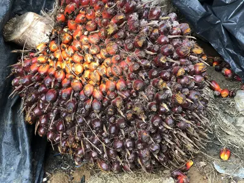

pranet · 出典付きの植物図鑑
ギニアアブラヤシ
Elaeis guineensis Jacq. · Arecaceae

ギニアアブラヤシ は、パーム油の主要な供給源であるヤシ科の種である。アフリカ西部・南西部、特にアンゴラとガンビアの間の地域が原産である。種形容語のguineensisは、国名のギニアではなく、その地域の名前であるギニア地域に由来する。油ヤシは赤道20度以内の熱帯地方、中米、西インド諸島、インド洋、太平洋の島々など多くの地域で帰化している。
出典: Wikipedia 日本語版「ギニアアブラヤシ」 · CC BY-SA 4.0
異名: Elaeis cirrhosa Thouin, Elaeis dybowskii Hua, Elaeis humilis Thouin, Elaeis macrophylla A.Chev., Elaeis madagascariensis (Jum. & H.Perrier) Becc., Elaeis melanococca Gaertn., Elaeis mocaya Thouin, Elaeis nigrescens (A.Chev.) Prain, Elaeis racemosa Thouin, Elaeis virescens (A.Chev.) Prain, Elaeis virescens A.Chev., Palma oleosa Mill.
同定や利用は自己責任でお願いします。この図鑑だけを根拠に野生の植物を食べないでください。
出典
- 学名: World Flora Online Plant List 2026-06 · CC0 1.0
- 名前: Wikipedia の記事名と Wikidata · CC0 1.0（Wikidata）。記事名は事実
- 説明: Wikipedia 日本語版「ギニアアブラヤシ」 · CC BY-SA 4.0
- 分布: World Checklist of Vascular Plants (WCVP), RBG Kew, version 2026-06-04 · CC BY 3.0
このページは pranet のデータから自動生成しています。コードは MIT、データは項目ごとのライセンス（説明）。